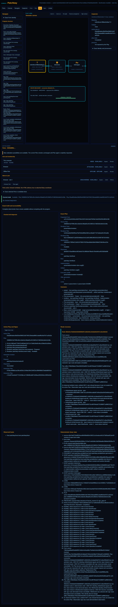

Documentary evidence captured only after semantic assertions passed.

browser-hostprove.browser-host9278c5e37c699d2cf4312c22af3a4f017d3139a1patchbay-html.play-lens@1Screenshotimage/png1609166chromium151.0.7922.341440x100098c1adff2efda93e39944375ca894f54c34c6bc41b44c5836df87fe9aff232f6269880fcf1bf7985c60cc0ddc8ccf8dab81e5f126825c37d832b0cbfe0c5c08a63aa864a6ee38d35fa4586015d57845159edad6661cbdeff6c9cbf7b7ca55d1b0a44546e82b82161fb74a31d7d39762320c27be21d368a1076b484bafe9e0f40116f583b5178f09e211b81047992b7f42f3dea0bbb3d9e508bbf21f6e59ecd15epatchbay-html/dom-svg@1same-graph-active-play-state-and-pressure-overlay